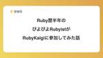
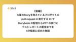
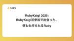

エス・エム・エス エンジニア テックブログ
https://tech.bm-sms.co.jp/
エス・エム・エスの開発組織、技術的取り組み、採用情報などを発信します
フィード

Ruby歴半年のぴよぴよRubyistがRubyKaigiに参加してみた話 1
1
エス・エム・エス エンジニア テックブログ
こんにちは、Retasusanです。 普段は大学に通いながら、京都のスタートアップでRuby on Railsを使ったアプリケーションを書いていますが、「Rubyエンジニア」と胸を張って名乗れるほどRubyについて詳しいかと言われると正直まだまだです…。 そんな自分が、日本最大級のRubyカンファレンスRubyKaigi 2025に初参加してきたので、現地の空気感や交流の様子を中心にまとめてみました！ RubyKaigiとの出会い 最初にRubyKaigiを知ったのは、Kyoto Tech Talkというイベントにお邪魔した時のことでした。学生支援があるという話を聞き、紆余曲折ありつつエス・エ…
13時間前

【後編】大量の Story を抱えているプロダクトの pull request に実行する CI で Storybook の配信から VRT の実行とテストレポートの配信までを5分程度に収めた物語
エス・エム・エス エンジニア テックブログ
ご機嫌麗しゅうございます。 @kimukei です。 これは 【前編】Visual Regression Testing の内製化への道 🚀 〜Chromaticから代替ツールへ〜 の後編にあたります。 ではさっそく、どうやって Chromatic から代替ツールへ移行していったかを紹介していきます。 コンテキスト カイポケリニューアルでは 577 個の Story, kaipoke-ui1 は 63 個ほどの Story を有している VRT しているスナップショット数はカイポケリニューアルで 969 枚、kaipoke-ui で 139 枚程度 カイポケリニューアルでは比較的動きの多い M…
2日前

RubyKaigi 2025: RubyKaigi初参加で出会った、使われ作られるRuby 3
エス・エム・エス エンジニア テックブログ
はじめまして、都内の大学でコンピュータサイエンスを専攻している小野です。インターネット上ではゆう猫(@yuneko1127)と名乗っています。RubyKaigi 2025には、株式会社エス・エム・エスから学生支援を受けて参加しました。この記事では、RubyKaigiに学生が初めて参加した経験やRubyKaigi 2025の面白かったセッションなどについて紹介します。 rubykaigi.org 参加の経緯 自分は専攻として情報科学を学習しているものの、専門はコンピュータビジョンとヒューマンコンピュータインタラクションで、プログラミング言語処理やRubyに特に詳しいというわけでもなく、RubyK…
7日前

介護業界理解のためのメンタルモデルを築く！中途入社者向けワークショップ型研修の紹介
エス・エム・エス エンジニア テックブログ
はじめに こんにちは、カイポケのリニューアルプロジェクトを担当しているエンジニアの田所(@ikuma-t)です。昨年10月に入社し、現在は請求関連の機能の開発を行っています。 カイポケが価値を提供する介護業界について、日常的には馴染みがないという方も多いかもしれません。私も入社以前は後期高齢社会における社会課題の1つであると漠然と認識している程度で、介護業界の制度についてはあまり詳しくありませんでした。「介護業界については未経験でも大丈夫」という言葉を信じ、この会社に入社しました。 今回は私のように未経験から介護業界へチャレンジするメンバーを支える、介護業界理解のためのワークショップ研修につい…
15日前
PHPカンファレンス小田原2025で技術コミュニティについて考えてきた
エス・エム・エス エンジニア テックブログ
こんにちは、介護/障害福祉事業者向け経営支援サービス「カイポケ」のリニューアルプロジェクトでモニタリングやオブザーバビリティ周りを担当している加我 ( @TAKA_0411 ) です。 4/11に開催されたPHPカンファレンス小田原 (以下ぺちおだ) 2025の前夜祭にて「推しのコミュニティはなんぼあってもいい」というタイトルで5分LTをしてきました。本記事ではLTの内容に触れつつ、以下の観点でまとめます。 このテーマを選んだ理由 登壇後の反響 私がぺちおだに参加する理由 PHPカンファレンス小田原2025 イベント公式サイト phpcon-odawara.jp PHPカンファレンス小田原20…
16日前
RubyKaigi2025: 初参加の #kaigieffect
エス・エム・エス エンジニア テックブログ
皆さんはじめまして。 慶應義塾大学の中村颯といいます。 X(Twitter)ではみゅーら( @lit_myura )でやってるのでもしよければお話しましょう...! 僕は元々中学の時にプログラミング塾に通っていて、そこで出会ったのがRubyでした。そこから早8年位経って、今では元々通っていたところで僕がRubyを教えています。 そんな中で教え子たちのレベルがどんどん上がる中、僕が最新情報をキャッチアップしないで何が出来るのかと思っていたところ、RubyKaigi2025を見つけました。 今回僕はエス・エム・エスさんの学生支援を受けて、人生で初めてRubyKaigiに参加しました。実はテックカン…
17日前
LeSS 座談会「導入に伴う変化と将来の展望」〜 Part3：変化を続ける組織と将来の展望〜
エス・エム・エス エンジニア テックブログ
合同会社 makigai（マキガイ）の貝瀬です。2024年6月からスクラムマスターとして、介護/障害福祉事業者向け経営支援サービス「カイポケ」に関わる組織やプロセスの改善を支援しています。 カイポケリニューアルプロジェクトでは、LeSS（Large Scale Scrum：大規模スクラム）を導入しています。本記事では2025年1月に実施した座談会の残りの部分（Part3）をご紹介します。 Part1、Part2については以下の記事をご参照ください。 tech.bm-sms.co.jp tech.bm-sms.co.jp 人物紹介 キム ダソム（以下、キムPO） エリアプロダクトオーナー 田村恵…
23日前
【前編】Visual Regression Testing の内製化への道 🚀 〜Chromaticから代替ツールへ〜
エス・エム・エス エンジニア テックブログ
こんにちは！カイポケリニューアルの開発推進チームでエンジニアをしている @_kimuson です。 フロントエンド開発において視覚的リグレッションテスト（Visual Regression Testing、以下 VRT）は欠かせない存在です。 私たちのチームでは長らくChromaticを活用してきましたが、プロジェクトの成長に伴い、よりスケーラブルでコスト効率の高いソリューションを模索する必要が出てきました。 本記事は 2 部構成の前編として、内製化の決断に至った背景と代替ツールの検討過程を紹介します。 後編では実際の実装プロセスと移行作業の詳細に焦点を当てる予定です。 内製化の決断 🤔 Ch…
1ヶ月前
バックエンドエンジニアがフロントエンド開発に挑戦して学んだこと
エス・エム・エス エンジニア テックブログ
こんにちは！カイポケリニューアルのサービス提供管理チームでバックエンドのエンジニアをしている清田です。ここ3ヶ月はフロントエンド開発をしています。 この記事ではバックエンドを主戦場とするエンジニアがフロントエンド開発に挑戦して学んだこと、見えてきた風景について紹介します。 (以降、バックエンドを BE 、フロントエンドを FE と略します) また私の個人的な体験ですが、FE 開発に貢献するためどのように学習したのかについても共有します。 BE エンジニアの FE 開発への挑戦、おすすめです！ なぜ FE 開発をするようになったのか 私が FE 開発に挑戦するようになった背景には、いくつかの要因…
1ヶ月前
PHPerKaigi 2025に協賛＆参加＆登壇しました！
エス・エム・エス エンジニア テックブログ
キャリア事業部のエンジニアの田実です！ 3/21〜23に開催されたPHPerKaigi 2025に協賛＆参加＆登壇したのでそのご報告になります！ phperkaigi.jp シルバースポンサーとして協賛していました！ エス・エム・エスはPHPerKaigi 2025にシルバースポンサーとして協賛しました！ キャリア事業部ではエンジニアを募集しております！ PHP/Laravelも利用しておりますので興味がある方は是非お話ししましょう！！ ソフトウェアエンジニア カジュアル面談(PM/EM/SRE/QAも歓迎) / 株式会社エス・エム・エス 登壇: Alpine.js を活用した Laravel…
1ヶ月前
SESから自社開発へ：データエンジニアとしてエス・エム・エスで過ごした半年を振り返る
エス・エム・エス エンジニア テックブログ
エス・エム・エス BPR推進部 キャリア横断開発グループ データ基盤チームの手塚と申します。2024年9月に当社に入社し、早くも半年が経過しました。 この記事では、私自身が実際に感じたことを「仕事の進め方」と「文化」の2つの観点からご紹介します。SIer・SES企業から転職を検討している方、またはエス・エム・エスに興味をお持ちの方にも、参考になる情報をお届けできれば幸いです。 経歴 前職ではSESエンジニアとして、BI画面開発やデータ連携（ETL）の開発業務に携わっておりました。SES（System Engineering Service）とは、契約期間に基づき、クライアント企業に対してエンジ…
1ヶ月前
LeSS座談会「導入に伴う変化と将来の展望」〜 Part2：LeSS導入後に起きた役割と組織構造の変化〜
エス・エム・エス エンジニア テックブログ
合同会社makigai（マキガイ）の貝瀬です。2024年6月からスクラムマスターとして、介護/障害福祉事業者向け経営支援サービス「カイポケ」に関わる組織やプロセスの改善を支援しています。 カイポケリニューアルプロジェクトでは、LeSS（Large Scale Scrum：大規模スクラム）を導入しています。本記事では2025年1月に実施した座談会の続編（Part2）をご紹介します。 Part1については以下の記事をご参照ください。 tech.bm-sms.co.jp 人物紹介 キム ダソム（以下、キムPO） エリアプロダクトオーナー 田村 恵（以下、田村PO） エリアプロダクトオーナー 原野 誉…
2ヶ月前
データの力で価値を生み出す──カイポケリニューアルを支えるアーキテクトの挑戦
エス・エム・エス エンジニア テックブログ
こんにちは、鄧 皓亢（でん はおかん）です。カイポケリニューアルプロジェクトのアーキテクト兼PdM（プロダクトマネージャー）としてエス・エム・エスに2024年に入社しました。 もともとはバイオ系の研究をしていましたが、「より早く価値を提供できる仕事がしたい」という思いからデータサイエンティストにキャリアチェンジしました。そこから飲食店向けのSaaS開発、CTO経験を経て、データ分析・データ基盤構築の知見を活かし、現在のポジションに至ります。 キャリアの変遷──データとプロダクトの融合へ 最初はバイオ分野の研究をやっていましたが、研究の成果が形になるまでの時間が長いことに課題を感じ、より早いリリ…
2ヶ月前
LeSS座談会「導入に伴う変化と将来の展望」〜 Part1：LeSSの導入から初月まで〜
エス・エム・エス エンジニア テックブログ
合同会社makigai（マキガイ）の貝瀬です。2024年6月からスクラムマスターとして、介護/障害福祉事業者向け経営支援サービス「カイポケ」に関わる組織やプロセスの改善を支援しています。 カイポケリニューアルプロジェクトにおけるLeSS（Large Scale Scrum：大規模スクラム）の適用範囲の広がりとともに、スクラムマスターも組織化しました。2025年1月に、スクラムマスターの1人である福田がファシリテーターとなり、LeSSの実践当事者を集めて座談会を実施したので、その模様をお届けします。 それぞれの立場からみた変化、変化の前後で感じたこと、今後の組織に期待していることなどを聞かせてい…
2ヶ月前
Developers Summit 2025参加レポート
エス・エム・エス エンジニア テックブログ
こんにちは。介護/障害福祉事業者向け経営支援サービス『カイポケ』でエンジニアリングマネージャー（以下EM）を担当している小宮山(@Eirandesmsrad11)です。 先日、Developers Summit 2025に参加しましたので、参加したセッションの感想をレポートします。 event.shoeisha.jp 参加したセッションの感想 自動テストの世界に、この5年間で起きたこと 要約 E2Eテスト界隈における5年間のお話です。資料はこちらとなります。 speakerdeck.com 5年前はE2Eテストの導入に際して「テストコードの作成、テストコードのメンテナンス、テスト実行環境の構築…
3ヶ月前
AWSにおけるコスト最適化の取り組み
エス・エム・エス エンジニア テックブログ
はじめまして、全社SREの高橋です。 全社SREでは、組織全体のサービスのリライアビリティとアジリティを向上させるために、横断的な視点で日々活動しています。その取り組みにおいて、「コスト最適化」も重要なテーマの一つです。 今回は、その具体的な施策の一つとして、AWSにおけるコスト最適化を支援する「コスト最適化チェックリスト」についてご紹介します。 はじめに まず、私たちが重視しているのは「コスト最適化」であり、単なる「コスト削減」ではありません。コストは少なければ良いというものではなく、適切な箇所に適切な金額をかけている状態があるべき姿です。「コスト最適化」を通して、無駄なコストの排除だけでは…
3ヶ月前
株式会社エス・エム・エスはRubyKaigi 2025に参加したい学生さんを支援します！
エス・エム・エス エンジニア テックブログ
株式会社エス・エム・エスのプロダクト推進本部の人事をしているふかしろ(@fkc_hr)です。2025年4月16日から18日にかけて、愛媛県松山市の愛媛県県民文化会館にてRubyKaigi 2025が開催されます。 rubykaigi.org 当日はRubyコミッターの しおい(@coe401_) をはじめとする弊社社員が参加予定です。 今回、学生の皆さんのRubyKaigi参加を支援いたします。チケット代や交通費・宿泊費を自己負担することなく、カンファレンスに参加いただけます。 本記事では支援の概要と応募方法についてお知らせいたします。 支援人数 3名〜5名 支援応募条件 RubyKaigiの…
3ヶ月前
大規模リポジトリの GitHub Actions ワークフロー検索性を改善する Chrome 拡張機能の開発
エス・エム・エス エンジニア テックブログ
こんにちは！カイポケリニューアルの開発推進チームでエンジニアをしている @_kimuson です。 カイポケリニューアルのプロジェクトでは、CI/CD ツールとして GitHub Actions を主に利用しています。モノレポを採用していることから、ワークフローファイル数が膨大になっており、手動実行したいワークフローの検索性が課題となっていました。本記事では、この課題を Chrome 拡張機能で解決した方法について紹介します。 問題 GitHub Actions には、ワークフローを手動を実行する機能が提供されていて、わかりやすい例だと deploy などのワークフローでよく利用します。通常、…
3ヶ月前
カイポケ障害児支援領域のリプレースで実施したデータ移行
エス・エム・エス エンジニア テックブログ
はじめまして、介護/障害福祉事業者向け経営支援サービス「カイポケ」エンジニアの杉浦です。 過去数回に渡り障害児支援領域のリプレースについて説明してきました。 今回は障害児支援領域のリプレースで実施した、旧システムから新システムへのドメインモデルの変更に伴うデータ移行について紹介いたします。 リプレースで行ったこと リプレースでは新たなドメインモデルを設計・構築することを行いました。それに伴い、データモデルも新たなドメインモデルに合わせて変更を行いました。そのため、旧システムのデータを新システムに移行する必要がありました。 また、データベースサーバも変更され、旧システムではAurora MySQ…
4ヶ月前
期待や不安も隠さず話し合える関係になれたチームビルディングの話
エス・エム・エス エンジニア テックブログ
はじめに 介護/障害福祉事業者向け経営支援サービス「カイポケ」の介護レセプトチームで働いている沖口です。介護レセプトチームは3つの独立したサブチームで開発を進めており、今回は1つのサブチームの活動として行ったチームビルディング活動について紹介します。チーム内ではこのサブチームを班と呼んでいるため、本稿でも「班」「チーム」で呼び分けを行います。 チームビルディングを行う前の課題感 私の所属している班は日々の開発プロセスに従い開発は進められはするものの、私の主観では「チームメンバーへの頼りにくさがある」「各メンバーもチームで仕事をする時、やりにくさを感じているのではないか」と感じる場面がありました…
4ヶ月前
デザイナーとエンジニアで育てる組織の共通言語としてのデザインシステム
エス・エム・エス エンジニア テックブログ
こんにちは、カイポケ開発部の城内と、株式会社グッドパッチUIデザイナーの乗田拳斗です。 現在、エス・エム・エスはグッドパッチと介護/障害福祉事業者向け経営支援サービス「カイポケ」のリニューアルプロジェクトを行っています。今回は本リニューアルプロジェクトにて行っているエンジニアとデザイナーの連携についてご紹介します。 エス・エム・エスとグッドパッチの取り組みについてはこちらのブログもご覧ください。 goodpatch.com 背景 カイポケは15年以上の歴史の中で介護事業のさまざまなサービス種類に対応を進め、現在は4万を超える事業所へサービスを提供しています。 高齢化が進む日本社会では、介護領域…
4ヶ月前
収益化まで9年！カイポケ18年の歴史を事業/プロダクト開発観点から解説
エス・エム・エス エンジニア テックブログ
この記事は 株式会社エス・エム・エス Advent Calendar 2024の12月25日の記事です。 介護/障害福祉事業者向け経営支援サービス「カイポケ」の事業責任者をしている園田一誠と申します。 2024年現在、SaaSのソフトウェア事業は数多く存在し、Vertical SaaSの中でも規模化したサービスも増えてきました。 Vertical SaaS事業は、BizとTechの総合格闘技で、事業面（セールス、マーケティング、サポート、事業開発）、資金調達、プロダクト開発（特定ドメイン知識をもとにしたプロダクト開発、スケーリング対応、etc…）など､変数が多く、非常に難易度の高い取り組みです…
5ヶ月前
LeSS の導入で変わるマネージャーの役割
エス・エム・エス エンジニア テックブログ
こんにちは、@_atsushisakai です。介護/障害福祉事業者向け経営支援サービス「カイポケ」の開発責任者をやっています。 この記事は、株式会社エス・エム・エス Advent Calendar 2024 の記事です。 開発チームに LeSS (大規模スクラム) を導入した 今年は担当しているカイポケの開発チームで大々的に LeSS を導入し、スクラムマスターの支援を受けながら、組織の形やプロセス全体を大きく変化させたり LeSS そのものを学びながらガイドラインに沿って細かく調整・適応していくことなどを行っていました。全てがうまくいっているわけでは全然ないので、LeSS の原理・原則を少…
5ヶ月前
Kotlin未経験者が入社から2か月でできた改善・できなかった改善
エス・エム・エス エンジニア テックブログ
この記事は株式会社エス・エム・エス Advent Calendar 2024 12月23日の記事です。 qiita.com はじめに BPR推進部EA推進Grでエンジニアをしている、尾宇江 @kotaoueです。 苗字が読みづらいので、社内では おうえ で活動しています。 ちなみに、BPR(Business Process Re-engineering)・EA(Enterprise Architecture)で、「部署を横断して会社全体の業務プロセスを改善していこう」みたいな目標のチームとなっています。 この記事では、10月1日からエス・エム・エスに入社し、Kotlin未経験だったおうえが入社…
5ヶ月前
エンジニアが営業現場を実感しにいった話
エス・エム・エス エンジニア テックブログ
この記事は 株式会社エス・エム・エス Advent Calendar 2024の12月23日の記事です。 qiita.com こんにちは！ @aysuzuki です。自己紹介はこちらの記事にまとめているので、ご覧いただけるととても嬉しいです。 入社からほぼ5ヶ月が経過しました。もう2025年なんて早いですね……。 キャリアパートナー エス・エム・エスではキャリアパートナー(CP)と呼ばれる、従事者(求職者)と事業者を繋ぐ転職・採用支援担当が双方とコミュニケーションをとり、より良いマッチングを創出しています。 より良いマッチングのためには情報の記録・収集・共有や、従事者や事業者に提案するための調…
5ヶ月前
複数の介護事業者向けサービス事業を支えるSalesforceの話
エス・エム・エス エンジニア テックブログ
この記事は株式会社エス・エム・エス Advent Calendar 2024 vol.2の12/20の記事です。 エス・エム・エス BPR推進部 EA推進Gr CSF開発チームの藤田と申します。 私は2023年8月にエス・エム・エスへ入社し、社内業務基盤として活用している介護キャリア・介護経営支援向けのSalesforceのシステム保守・エンハンス開発を行うチームのEM（エンジニアリングマネージャー）を担当しています。 前職ではSIerとしてSalesforce導入事業のPMをしていました。かれこれ15年ほどSalesforceに関わっています。 プライベートでは4人の子供を持つ父親です。10…
5ヶ月前
長期がすべて
エス・エム・エス エンジニア テックブログ
はじめに この記事は 株式会社エス・エム・エス Advent Calendar 2024の12月20日の記事です。 キャリア事業部でマネージャーをしている @kenjiszk です。実は2023年もアドベントカレンダーの20日目の記事を書いたのですが、あっという間に一年が経ってしまいました。今年1年、キャリア事業部でどんなことを考えながらどういった取り組みをしてきたかということを紹介していきます。 「長期がすべて」とは？ タイトルにある「長期がすべて」という言葉は、ジェフ・ベゾスが1997年に株主に向けて送った手紙から引用しています(出典: Invent & Wander)。仕事には、長期目線…
5ヶ月前
カイポケ フロントエンドチームの歩み
エス・エム・エス エンジニア テックブログ
株式会社エス・エム・エス Advent Calendar 2024 シリーズ 2の12月19日の記事です。カイポケリニューアルプロジェクトでエンジニアリングマネージャーをしている荒巻( @hotpepsi )です。この記事では、カイポケリニューアルプロジェクトでのフロントエンドチームの2年間の活動をお伝えしたいと思います。 qiita.com フロントエンドチームの発足 2022年末、ユースケースをもとに、フロントエンドとバックエンドそれぞれで開発していくことになり、フロントエンドチームが発足しました。 詳しい経緯はこちら: 大規模SaaS 「カイポケ」の未来を支えるフロントエンドの技術選定 …
5ヶ月前
キャリア事業を中心としたデータ・業務管理基盤のリアーキテクチャの話
エス・エム・エス エンジニア テックブログ
この記事は株式会社エス・エム・エス Advent Calendar 2024の12月19日の記事です。 qiita.com エス・エム・エス BPR推進部の佐々木と申します。 BPR推進部は、全社横断でビジネスプロセスと、その中で扱われるITシステムを最適化し生産性を向上させることをミッションにした組織です。 私はその中でキャリア／介護・障害福祉事業者／ヘルスケア／シニアライフといった国内事業の改善推進を主管するEA推進Grのグループ長をさせていただいています。 今回はBPR推進部とプロダクト開発部が共同で検討を進めている、キャリア事業領域を中心とした各種のデータ・業務管理基盤の見直しについて…
5ヶ月前
多様なビジネスモデルを展開している成長企業のBPR組織のミッション
エス・エム・エス エンジニア テックブログ
この記事は株式会社エス・エム・エス Advent Calendar 2024の12月18日の記事です。 qiita.com こんにちは、株式会社エス・エム・エスで全社の業務改善を推進するBPR推進部で責任者をしている稲留（いなどめ）です。今日はAdvent Calendarの場を借りて、エス・エム・エスのBPR組織についてお話したいと思います。 まずはじめに、簡単な自己紹介 大学卒業後のファーストキャリアはSIerで、エンジニアとITコンサルタントとして、合計10年程度キャリアを積み重ねました。その後、事業会社で全社横断プロジェクトの推進や事業管理・管理会計・人事などのバックオフィス部門を経験…
5ヶ月前